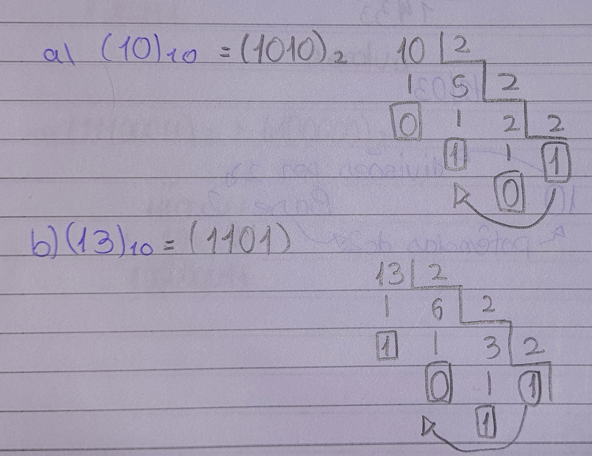

Números Decimais
O que são?
Os numeros decimais são os algarismos que possuem base 10, sendo eles:
0,1,2,3,4,5,6,7,8 e 9
Conversões:
Para realizar conversões de números em outras bases para a decimal serão utilizadas potências, e para converter um número com a base 10 irá ser efetuada uma divisão, e o dividendo será alterado para qual sistema você for utilizar. Ex: Sistema octal, dividido por 8.
Para você converter um número decimal para binário, irá precisar dividir por 2 e o RESTO será utilizado para descobrir o número, começando pelo último resultado até o primeiro, como no exemplo abaixo:

Voltar